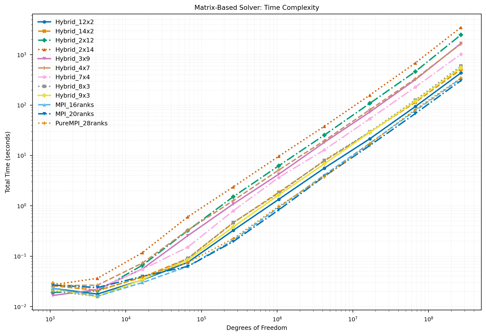

Loading...
Searching...
No Matches
Hybrid ADR Solver


A high-performance finite element solver for the steady-state Advection-Diffusion-Reaction (ADR) equation using the deal.II library. This project implements and compares two parallelization strategies:
- Matrix-Based Solver: Explicit sparse matrix assembly with WorkStream threading + AMG preconditioning
- Matrix-Free Solver: On-the-fly operator evaluation with Geometric Multigrid (GMG) preconditioning
Both solvers support hybrid MPI + threading parallelization for optimal performance on modern HPC architectures.
The complete documentation of this project code can be found here docs.
Features
| Feature | Matrix-Based | Matrix-Free |
|---|---|---|
| Sparse Matrix Storage | ✓ | ✗ |
| Thread-Parallel Assembly | WorkStream | FEEvaluation |
| Preconditioner | AMG (PETSc/hypre) | GMG (Chebyshev) |
| Memory Scaling | O(N × stencil) | O(N) |
| Best For | Small-medium problems | Large-scale problems |
Building
Prerequisites
We recommend using Spack to manage dependencies:
# Install Spack
git clone --depth=2 https://github.com/spack/spack.git
. spack/share/spack/setup-env.sh
# Install deal.II with required dependencies
spack install dealii +mpi +petsc +p4est \
'~gmsh' '~arborx' '~taskflow' '~ginkgo' '~opencascade' '~cgal' '~trilinos' \
'^petsc+hypre+metis+hdf5' \
'^mpich' \
'^python@3.11'
Compilation
# Load deal.II environment
spack load dealii
# Build the project
mkdir build && cd build
cmake ..
make -j$(nproc)
Usage
Running Examples
# Matrix-based solver (single process)
./main_matrix_based
# Matrix-free solver (single process)
./main_matrix_free
# Hybrid MPI + threading
export OMP_NUM_THREADS=4
mpirun -np 8 ./main_matrix_free
Running Benchmarks
# Time complexity study (refinement levels 2-10, degree 2)
mpirun -np 4 ./main_2d --min-ref 2 --max-ref 10 --degree 2 --output results.csv
# Convergence verification
mpirun -np 4 ./convergence_study
# Scaling study
mpirun -np 16 ./scaling_study --test strong
Command-Line Options
| Option | Description | Default |
|---|---|---|
| --min-ref, -m | Minimum refinement level | 2 |
| --max-ref, -M | Maximum refinement level | 10 |
| --degree, -d | Polynomial degree | 2 |
| --output, -o | Output CSV file | complexity_2d.csv |
| --threads, -t | Threads per MPI process | auto |
Submit PBS cluster
qsub submit_benchmark_2d.pbs
qsub submit_scaling_study.pbs
Performance
 
References
Authors
- Peng Rao
- Jiali Claudio Huang
- Ruiying Jiao
Politecnico di Milano — M.Sc. in High Performance Computing
License
This project is licensed under the MIT License.